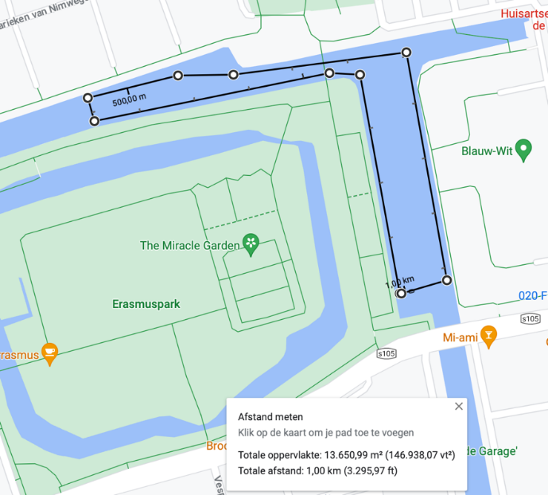
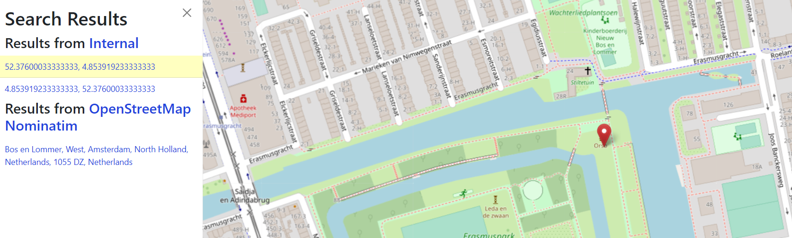

MADE - DATA1 - Julika, Pip & Robin (group 6).
For this exercise we have chosen a route in Amsterdam for the canal swimming event: the water near Erasmuspark. See picture:

The Municipality wants you to find a location for the Event Headquarters. They decided it would be best if this E.H. is as close to the centre of the swimming route. There is a bit of a concern for the after party and the stream of visitors. They want you to quantify the number of visitors that can reach the event and the capacity for festivities after the event.
import osmnx as ox
import networkx as nxplace_name = "Amsterdam, The Netherlands"
graph = ox.graph_from_place(place_name)location_1 = ox.geocode("Lanseloetstraat 1, Amsterdam, Netherlands")
print(location_1)(52.3771807, 4.8495429)
location_2 = ox.geocode("Joos Banckersplantsoen 7, Amsterdam, Netherlands")
print(location_2)(52.3747473, 4.8560339)
location_3 = ox.geocode("Joos Banckersplantsoen 55, Amsterdam, Netherlands")#With this piece of code, we can get the
nodes = ox.distance.nearest_nodes(graph, location_1[1], location_1[0])
nodes_2 = ox.distance.nearest_nodes(graph, location_2[1], location_2[0])
nodes_3 = ox.distance.nearest_nodes(graph, location_3[1], location_3[0])
print(nodes, nodes_2, nodes_3)46411953 8986414574 940042042
node_ids = [46411953,8986414574, 940042042]
lats = []
lons = []
for node_id in node_ids:
node = graph.nodes[node_id]
lats.append(node['y'])
lons.append(node['x'])
center_lat = sum(lats) / len(lats)
center_lon = sum(lons) / len(lons)
print("Center Latitide:", center_lat)
print("Center Longitude:", center_lon)Center Latitide: 52.37600033333333
Center Longitude: 4.853919233333333
nodes_zwemlocatie = ox.distance.nearest_nodes(graph, 4.853919233333333, 52.37600033333333)
print(nodes_zwemlocatie)8986457316
 Here is the point on the map and would suit the most as the small Event Headquarters
To search nearest busstation, we tried to load data from the 'Highway' type in the library. But there is insufficient data as you can see in the code below: the nearest busstop to the Erasmus park is at Gein
import osmnx as ox
import geopandas as gpd
from shapely.geometry import Point
node_coordinates = (52.3755052, 4.8540567999999995)
buffer_distance = 10000
graph = ox.graph_from_point(node_coordinates, dist=buffer_distance, network_type="all")
# Create a Shapely Point object for the node coordinates
node_point = Point(node_coordinates)
# Create a GeoDataFrame with the graph nodes
nodes_gdf = ox.graph_to_gdfs(graph, edges=False)
print (nodes_gdf['highway'])
# Find the nearest bus stop to the specified node
nearest_bus_stop = nodes_gdf.loc[nodes_gdf['highway'] == 'bus_stop', 'geometry'].distance(node_point).idxmin()
# Get the information about the nearest bus stop
bus_stop_info = nodes_gdf.loc[nearest_bus_stop]
# Print the information about the nearest bus stop
print("Nearest Bus Stop:")
print(bus_stop_info)osmid
6316199 NaN
25596455 NaN
25596477 NaN
25645989 NaN
25645990 NaN
...
11268618986 NaN
11268618988 NaN
11268691197 NaN
11268691246 NaN
11268691247 NaN
Name: highway, Length: 104689, dtype: object
Nearest Bus Stop:
y 52.294334
x 4.989107
street_count 1
highway bus_stop
ref NaN
geometry POINT (4.9891074 52.2943344)
Name: 3321854273, dtype: object
C:\Users\julik\AppData\Local\Temp\ipykernel_9728\1578704776.py:18: UserWarning: Geometry is in a geographic CRS. Results from 'distance' are likely incorrect. Use 'GeoSeries.to_crs()' to re-project geometries to a projected CRS before this operation.
nearest_bus_stop = nodes_gdf.loc[nodes_gdf['highway'] == 'bus_stop', 'geometry'].distance(node_point).idxmin()
As there is no data for the nearest busstop (NaN), we decided to get the nearest busstop: Jan van Galenstraat.
For Tram 7 there are 6 stops every hour and for Bus 15 there will stop a bus 4 times an hour.
bus_capacity = 45+105
bus_frequency = 4
tram_capacity = 50+125
tram_frequency = 6
total_capacity = (bus_capacity * bus_frequency) + (tram_capacity*bus_frequency)
print(total_capacity,"passengers every hour")1300 passengers every hour
The orange line is Tram 7
The purple line is Bus 15
Tram 7: The node of the start location is 5737120694, the end location is 6072947033.
Bus 15: The node of the start location is 2314277260, the end location is 9963390155
tram_start = ox.geocode("Azartplein 65, Amsterdam, Netherlands")
tram_end = ox.geocode("Sloterpark, Amsterdam, Netherlands")
bus_start = ox.geocode("Station Sloterdijk, Amsterdam, Netherlands")
bus_end = ox.geocode("Zuidplein 10, Amsterdam, Netherlands")
print(tram_start)
print(tram_end)
print(bus_start)
print(bus_end)(52.3776147, 4.936303)
(52.36503595, 4.812127156019273)
(52.3890161, 4.838877)
(52.3389984, 4.8736856)
nodes = ox.distance.nearest_nodes(graph, tram_start[1], tram_start[0])
nodes_2 = ox.distance.nearest_nodes(graph, tram_end[1], tram_end[0])
nodes_3 = ox.distance.nearest_nodes(graph, bus_start[1], bus_start[0])
nodes_4 = ox.distance.nearest_nodes(graph, bus_end[1], bus_end[0])
print(nodes, nodes_2, nodes_3, nodes_4)5737120694 6072947033 2314277260 9963390155
graph = ox.graph_from_place(place_name)
node_ids = [5737120694, 6072947033]
lats = []
lons = []
for node_id in node_ids:
node = graph.nodes[node_id]
lats.append(node['y'])
lons.append(node['x'])
center_lat = sum(lats) / len(lats)
center_lon = sum(lons) / len(lons)
print("Center Latitide Tram 7:", center_lat)
print("Center Longitude Tram 7:", center_lon)Center Latitide Tram 7: 52.3710068
Center Longitude Tram 7: 4.874617450000001
graph = ox.graph_from_place(place_name)
node_ids = [2314277260, 9963390155]
lats = []
lons = []
for node_id in node_ids:
node = graph.nodes[node_id]
lats.append(node['y'])
lons.append(node['x'])
center_lat = sum(lats) / len(lats)
center_lon = sum(lons) / len(lons)
print("Center Latitide Bus 15:", center_lat)
print("Center Longitude Bus 15:", center_lon)Center Latitide Bus 15: 52.36404365
Center Longitude Bus 15: 4.856406
The bus line is more in the center than the tram line. because the tram line route is much longer.
For the amenities near the finish-line: We assume that the avarage person can walk 1 km (1000 meters) within 10 minutes
zwemlocatie = ox.graph_from_address('Erasmuspark, Amsterdam, Netherlands', dist=1000, network_type="walk")
ox.plot_graph(zwemlocatie)
zwemlocatie.nodes[8986457316]{'y': 52.3759955, 'x': 4.854096, 'street_count': 3}fig, ax = ox.plot_graph(zwemlocatie, filepath='image.svg', save=True, show=False, close=True)
place = "Erasmus, Amsterdam, Netherlands"
tags = {"amenity": True}
gdf = ox.features_from_address(place, tags, dist=1000)
gdf.shape
fig, ax = ox.plot_footprints(gdf, figsize=(10, 10))Here, all the amenities are shown in the picture above in orange.